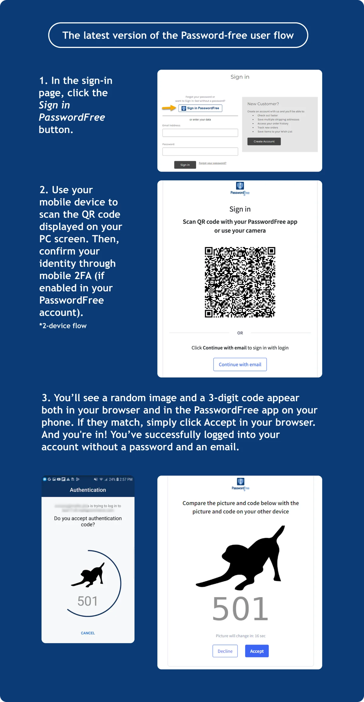
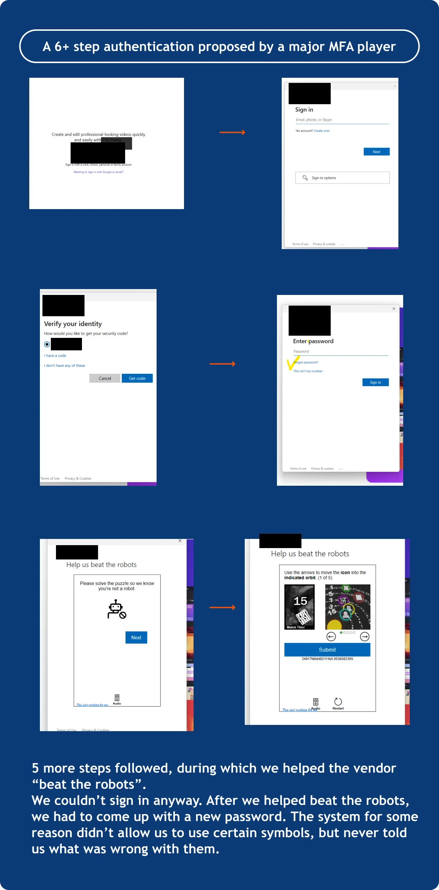
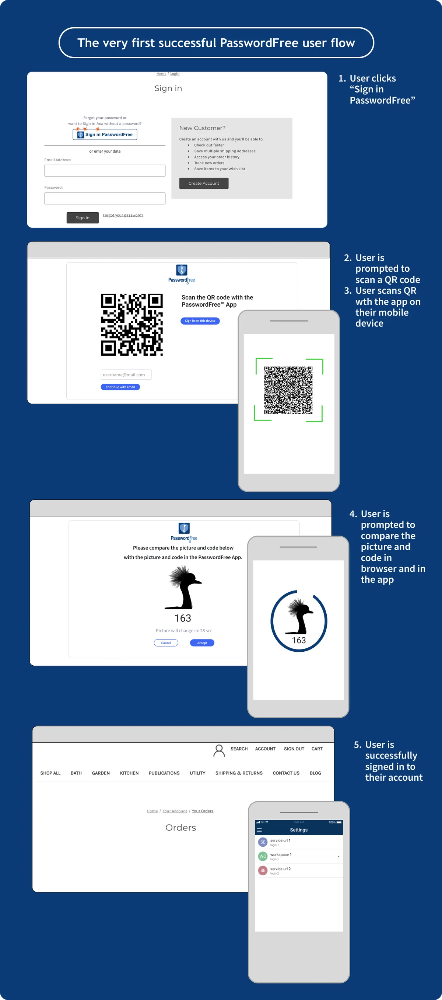

Olga Zhylko, Lead BA, is ready to share this knowledge with you.
Not only did we learn how to do it fast, but we do it securely, too. Finally we’ve implemented this feature in our PasswordFree solution. And this turned out to be my all-time favorite feature.
Passwords are a real disaster when it comes to user friendliness. That’s why the number of Google queries on passwordless authentication is so diverse and is only growing.
yahoo mail login without password
twitter login without password
how to login to a laptop without a password
You got the idea.
Not only are passwords insecure, they are traditionally one of the major UI hiccups.
Passwords are easy to crack due to their simplicity and predictability
Same passwords are reused across multiple platforms (Google)
One out of every eight adults in the U.S. reported using the exact same password for all of their online accounts, while more than half (52%) admitted to reusing passwords across several different accounts (ExplodingTopics)
So, with PasswordFree, we made passwords a thing of the past for BigCommerce and WordPress websites using our free plugins. However, the login part remained – and it didn’t take us too long to get rid of it, too. This is how my favorite feature – LoginFree – came into being.
Hi, I’m Olga Zhylko, Lead Business Analyst at Identité, and today I’ll share with you the backstage of LoginFree.
Here’s how to login without a password—or an email—easily.
Yes, you got it right, it’s possible.
While passwordless logins have been gaining traction recently, it required some ingenuity from our team to go even further and make loginfree authentication a reality.
At first, there was a basic idea. The task from our leadership team was to understand which flow we can implement based on that idea. At this stage, I already started sketching out our first drafts of LoginFree.
John Hertrich, our CEO, says in the LoginFree press release that “By eliminating the need to type a username to log in, we have removed the last bit of friction and security risk.”
“By eliminating the need to type a username to log in, we have removed the last bit of friction and security risk.”
I say – the goal was to reach a maximum level of simplicity for the user, where they even don't have to remember their email, let alone password. The fastest, simplest and the most secure authentication method.

What did the first mockups look like for the LoginFree feature? Were they drastically different from the final version that went into production?
It's funny to go back and look at all the versions and user flows that this feature went through before going into production. We still have those drafts. Initially, even the most complex functionality starts from simple sketches just to give us all some basic understanding of where we want to go with this feature.
Unlike Hollywood movies, those ideas aren’t drawn on a napkin, as even in their simplest state they are already complex enough and require at least Figma to capture.
What are the major improvements that we implemented in comparison to earlier states of the LoginFree feature?
I think the flow itself has improved a lot. We reduced the user flow from 10 click down to only one for a secure loginfree sign-in with a single device
As a comparison, one of the largest MFA players (we call no names here) proposes a user a 6+ step method to authenticate, if a user has forgotten his/her password (see the picture below). Isn’t it a bit user unfriendly in 2024?

In the picture below, you can see the very first successful user flow. A good share of the improvements has already been implemented, and some of them are still sitting in our backlog.

{kind=link}
Altogether, there were at least 14 stories for authentication and around the same number for the user registration flow.
What was the easiest thing while working on LoginFree?
Documentation is always a fairly standard process, in my opinion. You see the flow and start documenting it. Team discussions, on the contrary, can be challenging, although it’s still a creative and exciting process.
I’ll be completely honest with you, team discussions for this feature were quite something. We had a lot of meetups and syncs where the team members contributed their ideas and tried to figure things out.
The issue arises when alternative solutions related to the technical implementation come up. This makes the whole process more complicated.
As an alternative, we've discussed several ways the user can confirm the authentication in a 2-device flow (e.g. provide a 6-digit code). At the end of the day, we chose to go with our lovely picture+code pattern. What’s more, we've added a QR code icon in mobile apps to make the authentication with a mobile device simpler and more intuitive.
Finally, let’s go through the final user flow for LoginFree together
With LoginFree, PasswordFree users can securely access their accounts in just three quick steps (for 2-device user flow).
Here’s how registered users can sign in using PasswordFree application:
1️⃣ On the login page, click the Sign in PasswordFree button.
2️⃣ Use your mobile device to scan the QR code displayed on your PC screen. Then, confirm your identity through mobile 2FA (if enabled in your PasswordFree account).
3️⃣ You’ll see a random image and a 3-digit code appear both in your browser and in the PasswordFree app on your phone. If they match, simply click Accept in your browser.
4️⃣ And you're in! You’ve successfully logged into your website account.
Note: This password-free and LoginFree sign-in is only available if the website owner has enabled it for customers. If not, you’ll need to sign in using your email address. Check the User Guide for details.
For new users, here’s how to register:
1️⃣ Download the PasswordFree app by scanning the QR code on the webstore's login page or directly from the App Store or Google Play.
2️⃣ Open the app and go to the Accounts page.
3️⃣ Tap the + sign to add a new account.
4️⃣ On the registration screen, click Get Started and scan the QR code on your PC screen.
5️⃣ Accept the sign-in prompt, and like before, a random image and 3-digit code will appear both in the app and your browser.
6️⃣ Confirm the match by clicking Accept in the browser, and you’re now signed into your website account.
That’s it! Enjoy seamless, secure, and password-free access to your account.
More on the topic
If you’re curious about how to login on computer without password, we have a solution for that too. Check out the page at the link for a free Desktop Unlock for personal use and an affordable Desktop Unlock to secure your organization.
Looking for some info on how to login mac without password? At the link are our PasswordFree solutions for Mac, iPhone, iPad and Apple Watch.
Login without password and user name to stay safe online and while working with your digital assets.
Follow us on LinkedIn to stay updated on our recent posts!